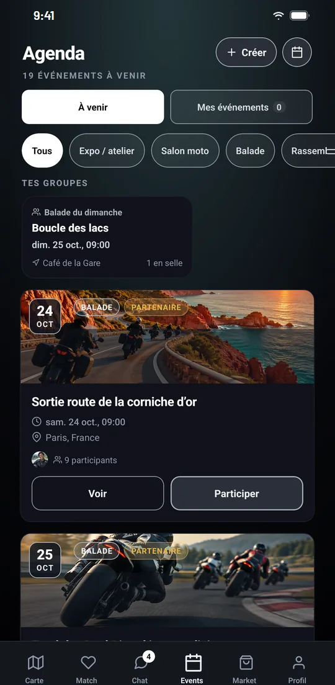

Inscription en un geste
Touchez « Participer » pour vous inscrire. Vos sorties sont regroupées dans « Mes événements ».
L'agenda IzenRide réunit les balades, rassemblements, salons et track days proposés par la communauté. Inscrivez-vous, échangez avec le groupe et laissez le GPS vous conduire au point de rendez-vous.

Balades, rassemblements, salons moto, expositions, ateliers et track days : filtrez par catégorie et inscrivez-vous en un geste.
Touchez « Participer » pour vous inscrire. Vos sorties sont regroupées dans « Mes événements ».
Chaque sortie dispose de sa propre discussion pour s'organiser : horaires, pleins, point de rendez-vous.
Les photos de la journée sont réunies dans un album commun à la sortie.
Le lieu de rendez-vous s'ouvre sur la carte et le guidage vocal démarre.
Les personnes qui organisent ou rejoignent une sortie peuvent y inviter leurs contacts.
Les sorties proposées dans vos groupes apparaissent en tête de l'agenda.
Un groupe réunit votre club ou vos riders habituels dans une discussion commune. Les invitations sont envoyées à vos contacts, qui rejoignent le groupe après acceptation, ou passent par un lien d'invitation : permanent, limité à 10 utilisations ou valable 7 jours. La personne qui administre le groupe peut désactiver un lien à tout moment.
Une sortie proposée dans la discussion s'affiche avec sa date et son lieu de rendez-vous. Chaque membre répond « J'en suis », « Peut-être » ou « Pas là » : vous savez tout de suite qui sera au départ.
Découvrir la communauté moto IzenRide
Bon à savoir. Les sorties sont proposées et organisées par les membres. IzenRide ne les organise pas : chaque personne roule sous sa propre responsabilité, avec un véhicule assuré et dans le respect du code de la route.
Une autre question ? Écrivez-nous à support@izenride.com.
Ouvrez l'agenda dans l'application : les sorties à venir sont classées par catégorie (balade, rassemblement, salon moto, exposition ou atelier). Touchez « Participer » pour vous inscrire.
Non, rejoindre une sortie est gratuit. La création de sorties est incluse dans l'abonnement Premium.
Les sorties sont proposées et organisées par les membres de la communauté. IzenRide ne les organise pas : chaque personne roule sous sa propre responsabilité, avec un véhicule assuré et dans le respect du code de la route.
Depuis la sortie, touchez « Y aller » : le lieu de rendez-vous s'ouvre sur la carte et le guidage démarre.
Les personnes qui organisent ou rejoignent une sortie peuvent y inviter leurs contacts. Pour un groupe, envoyez une invitation à vos contacts ou partagez un lien : permanent, limité à 10 utilisations ou valable 7 jours.
Disponible gratuitement sur Android et iPhone, en 9 langues. Créez votre compte en quelques minutes et paramétrez votre visibilité dès la première utilisation.